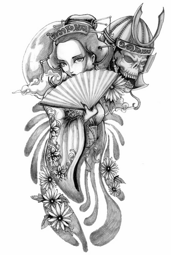
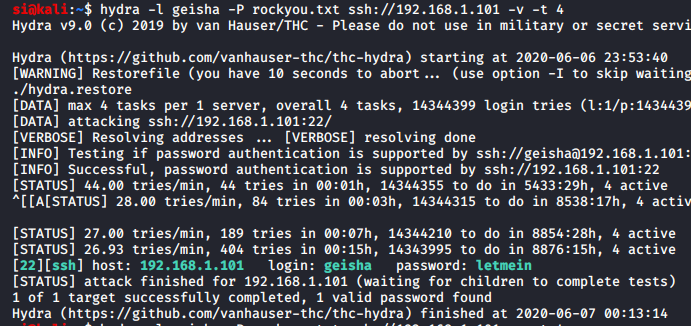
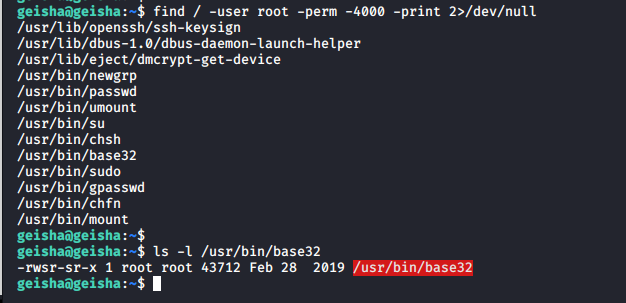
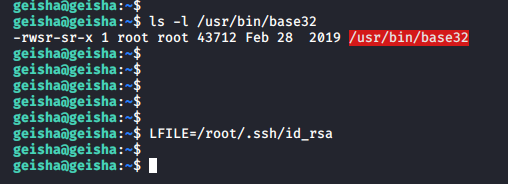
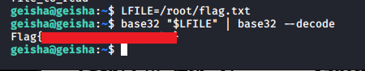
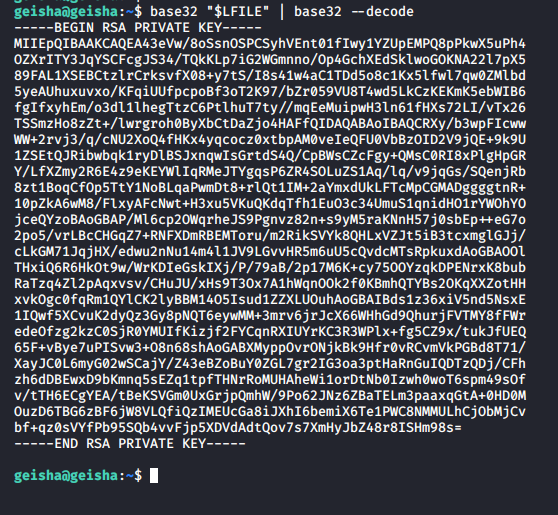
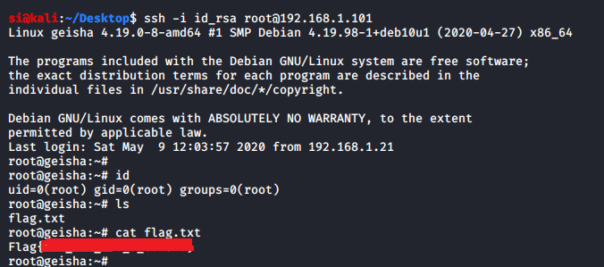

Simon McCabe
OSCP · OSWP · PWPP · PWPA · PAPA · EnCE · Linux+ · LPIC-1 · Network+ · Security+ · Pentest+ · eJPT · eWPT · BSc · PGCert

OSCP · OSWP · PWPP · PWPA · PAPA · EnCE · Linux+ · LPIC-1 · Network+ · Security+ · Pentest+ · eJPT · eWPT · BSc · PGCert
...Geisha Writeup...

I decided to do this box for two reasons. One, it said it was beginner / intermediate and I was curious to see how intermediate it was. And two, it said there was a rabbit hole. I wanted to see if I'd get lost down it, or get root.I never went down it - so luckily, I got through the box in good time!
First, I browsed to the IP (after running "sudo netdiscover" (grr, I wish more boot2root machines would display the IP when they start up). I could see the logo of the machine. Next up, I decided to use hydra to bruteforce SSH, as there wasn't much on the server.

Once logged in with the creds, I began hunting for SUID files:

base32 stood out like a sore thumb, so I decided to use GTFO bins to see what we could do with it.

It turns out that the file can perform a very clever little trick, which enables us to set a filepath and then run the base32 command on the file, then decode it.
This is perfect - and obviously what the box designers want us to do. If we can grab a user's file, we can display it in our terminal.
In fact, we could simply display the root flag at this point and call it a day:

However, let's do this properly...
I pulled root's id_rsa file:

I then logged in, using root's rsa key, confirmed I was root, then grabbed the flag:

A rather fun little priv-esc. Thanks SunCSR Team for the challenge! In the next one, we'll tackle "sumo", also by SunCSR Team.